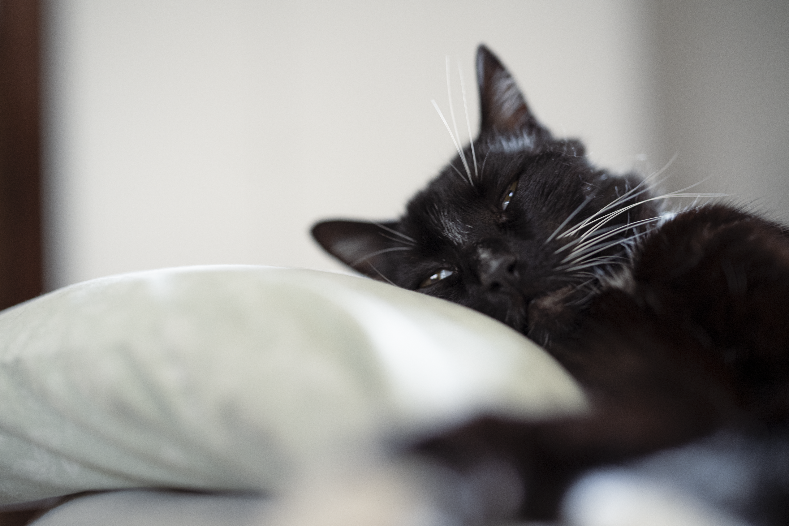
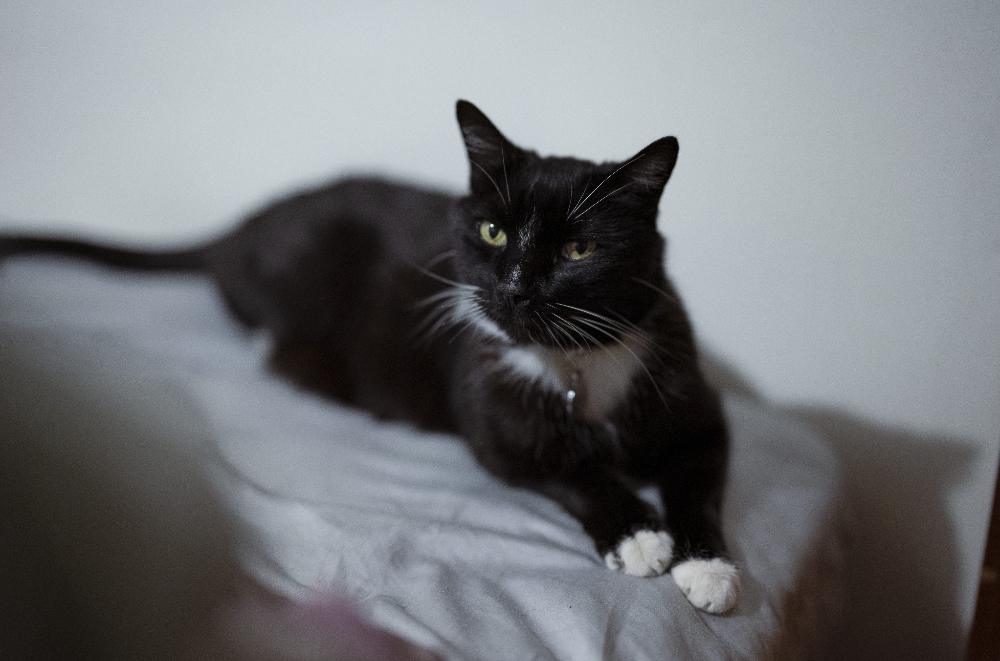
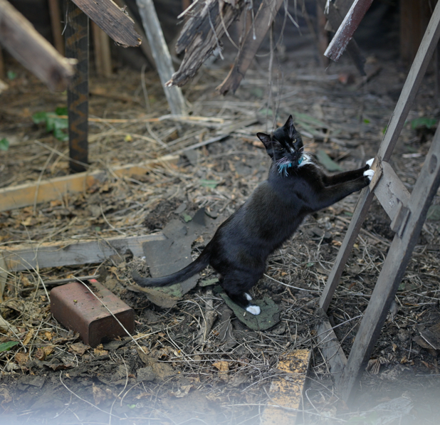

What is a Tuxedo Cat?
A tuxedo cat is what I like to call a sophisticated kind of cat that has a unique black & white pattern, in some cases the white fur can be noticed on their paws, stomach, chest, etc. The tip of a tuxedo cats tail can also be white, it's unique because no two tuxedo cats look identical. Because of the fascinating appearance, I often associate tuxedo cats with the concept of yin/yang. The duality amongst the fur patterns shows balance and harmony whilst being so so so adorable.
Personality of a Tuxedo Cat
The main reason I'm creating a website about tuxedo cats is because I have one myself, his name is Panda and in my family we love his unique personality. From the link above "Tuxedo cats 101", tuxedo cats are quite intelligent, proud and love to be vocal. They get energetic and love to play but won't show it unless they have zoomies, also they can be picky about certain foods. My cat just about eats salmon nowadays for wet food, we tried different kinds of wet food for him but he really likes the seafood ones. One time I bought a box of premium wet food from a company called Smalls for Panda, he ate some of the chicken, loved the seafood one, but didn't eat the turkey one at all.
Pictures of Panda


